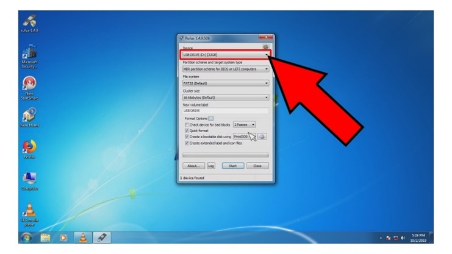
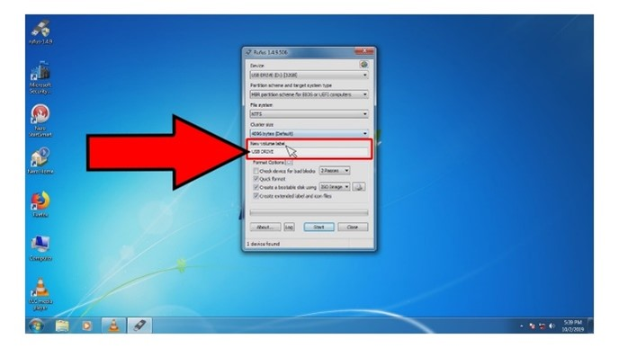
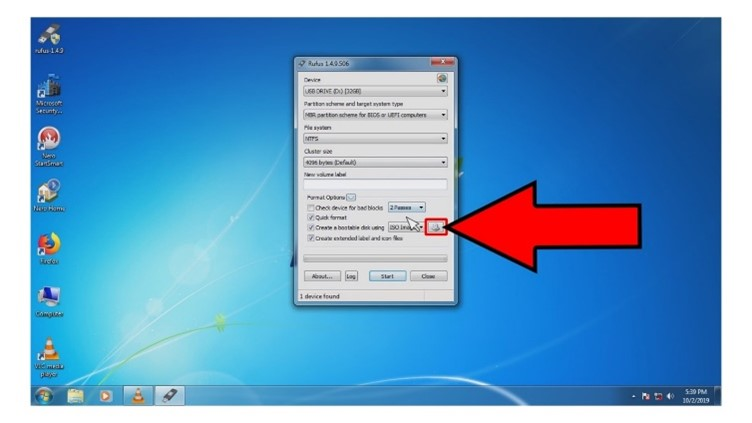
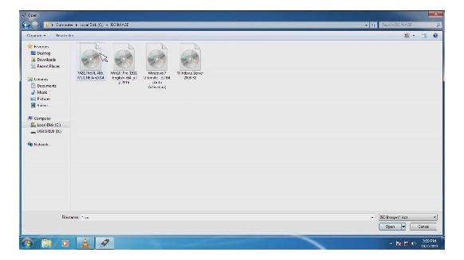
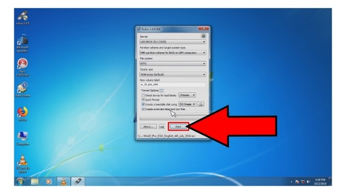
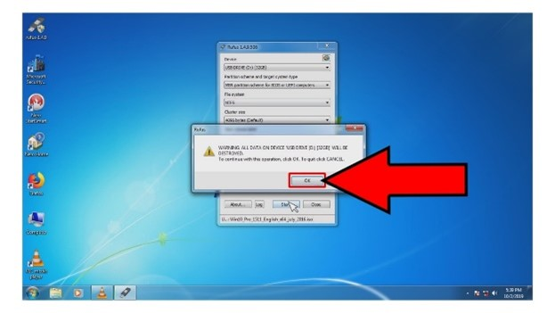
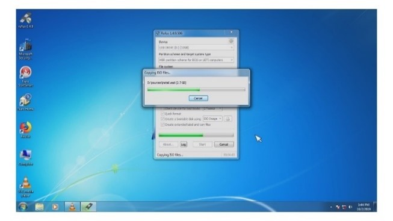
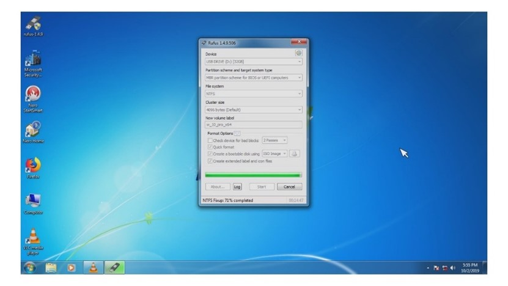
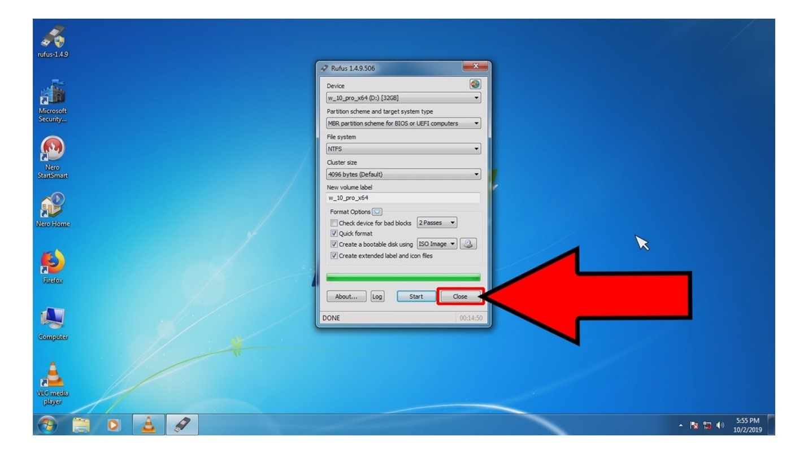

INTRODUCTION
The BIOS (pronounced as "bay-os") or the basic input/output system of the computer, is responsible in making sure that all the other chips, hard drives, ports, and the CPU function together.
The BIOS basically sets up your computer -- it loads your drivers and boots the operating system.
The BIOS is a software usually built onto the motherboard that shows the major hardware components of your computer with the operating system.
It is usually stored on a Flash memory chip on the motherboard, but sometimes the chip is another type of ROM.
When you turn on your computer, the BIOS does several things. The sequence is as follows:
-
Check the CMOS Setup for custom settings
-
Load the interrupt handlers and device drivers
-
Initialize registers and power management
-
Perform the power-on self-test (POST)
-
Display system settings
-
Determine which devices are bootable
-
Initiate the bootstrap sequence
By default, the first boot of the newly installed computer is on the hard disk--may it be on a laptop or a desktop computer. When installing an operating system, the BIOS should be configured to set the system to boot on the operating system to be installed. It should boot first on the USB installer.
Upon turning the computer on, press the keys that would run Setup. On most computers, it would be keys: ESC, DEL, F1, F2, F12, Ctrl-Esc, or Ctrl-Alt-Esc to enter setup. There is usually a line of text at the bottom of the display that tells you "Press ___ to Enter Setup."
BIOS setup would depend on the motherboard manufacturer. However, these are the common, standard options you may see in the BIOS setup:
If you would like to boot from a certain device, say a USB Flash Drive to install an Operating System (which we will demonstrate later), click advanced set-up and look for the first, second, and third boot device.
Select first boot device. By default, it would be the hard drive on the installed computer.
Make sure to choose "Save Changes" when you are changing settings in the BIOS. Afterwards, this will restart the computer, so the new settings take effect.
- System Time/Date - Set the system time and date
- Boot Sequence - The order that BIOS will try to load the operating system
- Plug and Play - A standard for auto-detecting connected devices; should be set to "Yes" if your computer and operating system both support it
- Mouse/Keyboard - "Enable Num Lock," "Enable the Keyboard," "Auto-Detect Mouse"...
- Drive Configuration - Configure hard drives, CD-ROM and floppy drives
- Memory - Direct the BIOS to shadow to a specific memory address
- Security - Set a password for accessing the computer
- Power Management - Select whether to use power management, as well as set the amount of time for standby and suspend
- Exit - Save your changes, discard your changes or restore default settings
WHY IS BOOTING REQUIRED?
Hardware does not know where the operating system resides and how to load it.
Need a special program to do this job – Bootstrap loader.
(e.g. BIOS – Boot Input Output System)
Bootstrap loader locates the kernel, loads it into main memory and starts its execution.
In some systems, a simple bootstrap loader fetches a more complex boot program from disk, which in turn loads the kernel.
Booting is a startup sequence that launches the operating system of a computer when it is turned on.
A boot sequence is the initial set of operations that the computer performs when it is switched on. Every computer has a boot sequence.
A boot device is any device or drive that has the required boot files that allows the computer to start.
In this case, if we are building a PC from scratch, usually there is still no operating system. With this, an operating system can be booted or installed from a boot device.
A boot drive commonly used is the hard drive. Usually, an operating system like Microsoft Windows is installed in a hard drive to load Windows.
Using a third-party application (Rufus), scroll the demonstration slides below to see the step-by-step process on creating a bootable USB device.
-

-

-


-


-

-

-
